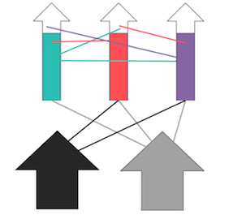
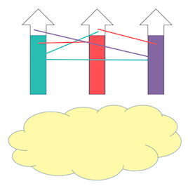

Orkestrering av IT-utvikling
i store organisasjoner


Hva har prosjektledere i verktøykassa?


“...hus og programvare er to forskjellige ting. Huset er konkret og må planlegges før det bygges, fordi det er vanskelig å endre det i etterkant.Programvare, derimot, er abstrakt ogtrenger liten grad av planlegging før det bygges, fordi det er enkelt å endre det i etterkant.”
Men prosjektene er jo Smidig!
Kommuniser mindre!
Autonome team
“Autonome teamer team som kanløse alle oppgaversom skal til for å videreutvikle produkteruten ekstern innblandingeller behov for å henvende seg til utenforstående personer.”
“Communication is a sign of dysfunction. It means people aren’t working together in a close, organic way. We should be trying to figure out a way for teams to communicate less with each other, not more.”
All kommunikasjon skal foregå over API-er!
“There will be no other form of inter-process communication allowed: no direct linking, no direct reads of another team’s data store, no shared-memory model, no back-doors whatsoever. The only communication allowed is via service interface calls over the network.”
Ellers får du sparken!
“Anyone who doesn’t do this will be fired. Thank you; have a nice day!”

Conway's lov

Organizations which design systems ... are constrained to produce designs which are copies of the communication structures of these organizations
Silo-organisasjon
Monolitten

Avmystifisering av Conway's lov
“Microservices allow organizations to align the architecture of their systems to the structure of their teams.”
Mikrotjenester

En teknisk løsning på en organisatorisk utfordring
Ett team med et stort potensiale
Full fart! ☺
Skalering til to team som jobber på samme system.

Businessen går bra! ☺

... men fremdriften er dårlig ☹
Brooks' lov

“Adding manpower to a late software project makes it later.”
Autonome team med mye ansvar (DevOps)
Ingen vits i å finne opp hjulet på nytt (“DevOps”-teams)
Ikke standardiser teknologi eller lag felleskomponenter!
NoOps
Eksempler
Amazon: A shared nothing infrastructure
“You build it, you run it”
Spotify: Squads, Tribes, Chapters & Guilds
- Squad: mini-startup (unike tjenester)
- Tribe: mini-startup inkubatorer (forretningsområder)
- Chapter: Folk som gjør lignende ting (personalansvar)
- Guild: Folk som har felles interesser (kompetansebygging)
FINN.no: We are now removing the Ops team
→
Gov.uk: Cloud first
Netflix: NoOps


5. og 6. september 2016
Takk for meg!